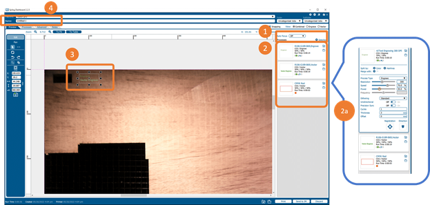

Laser Cutting
This assignment looks at laser cutters, the laser cutting process, how to operate a laser cutter and design products for and fabricate them using laser cutters.
What I have learned in this part:
Creating Product
Creating Dog Tag
Save into thumbdrive
Save into correct format
Edit image and send to printer
Making a dog tag
Making a desk caddy
Printing
Set parameters of tag onto the printer
Creating Product:
To print something, you have to create it first, therefore, the first product I’m making is a dog tag.
Figure 1: Fusion 360 User Interface
First, we start off using the sketch tool and sketch out a rectangle that is 70mm to 30mm in size.

Figure 2: Erected a rectangle
After creating the rectangle, I use the fillet tool to create rounded angles for all 4 corners of the shape
Figure 3: Rounded Apple looking ass shapes
When I’m done smoothing them out, I use the circle tool to create a hole for the chain to go through on the left side of the shape with dimensions: 5mm rad
Figure 4: Creating hole to put chain/rope through
Afterwards, I select the outer circle and the rounded rectangle and extrude it to 3mm in thickness
Figure 5: Now this looks like a dogtag ig?!?!?!!
After this, I have to carve my name into the dogtag by using the Sketch > Create > Text tool.
Figure 6: Insert text
Key in what you want and press ok
Figure 7: Dogtag with name on it
To insert an image/shape on it, you can use inkscape and generate a vector image. After you’re done, you can click on Insert > Insert SVG.
Figure 8: Inserting vector image
Afterwards, you can modify and change positions before putting it on the dogtag.
Figure 9: After a bit of fiddling around, we’re done!
Save into thumbdrive:
Right click on the latest sketch you have and click on Save As DXF.
Figure 10: Downloading as DXF
After choosing the location and everything, save the file into a thumb drive and go to the FabLab at T11C to transfer the file in there
After inserting the thumb drive into the lab computer, open up the file in the computer (Mine’s called Discord Nametag.svg) into CorelDraw
Figure 11: Opening DXF file in CorelDraw/InkScape
After some modifications and grouping, such as what lines you want to cut (hairline) and what lines to engrave (Fill pattern) then send it to the Epilog Pro printer
Figure 12: Find the printer to send the file to the laser cutter
Modify the parameters for the cutting such as the speed, power and frequency for the chosen material
Figure 13: Dashboard (M2 version)

Figure 14: Dashboard (Fusion Pro Version)
After setting up the material position and modifying parameters it is time to send to the printer
Figure 15: Send to Printer (M2 Version)
Figure 16: Send to Printer (Fusion Pro Version)
After sending to printer and waiting a few seconds - minutes, check the product and take it out when you think it is ready.
Figure 13: Finished product (should’ve run the engrave a few more times)
Assignment:
For my Digital Fab assignment, I have created an accessory box inside of Autodesk Fusion 360 and downloaded the DXF files of all sides, now for me to upload these files inside of CorelDraw.
That is all for now, stay tuned for more updates!!